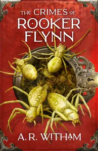

In The Crimes of Rooker Flynn, A.R. Witham returns to the world of Keymark and weaves another transportive fantasy adventure full of majik and mayhem. Darker and more disturbing than ever before, this dangerously addictive and diabolically fun tale of survival and unlikely friendship is a true emotional rollercoaster from start to finish.
Now, this review is a special one for me, as I had the absolute honour and pleasure of alpha reading this entire trilogy last year. Does that make me biased? Maybe. But then, the entire reason I ended up being an alpha reader in the first place is because The Legend of Black Jack wasnt entirely my cup of tea, and Andy wanted some brutally honest feedback.
Jokes on him, I ended up loving The Crimes of Rooker Flynn, even in its rough early stages before (in Andys own legendary words) “the story puts her makeup on, still standing in front of the mirror wearing faded underwear and a tank top, eating a powdered donut”. And honestly, the finished product that I am reviewing here today has had a magnificent glow-up and turned out even better than I could ever have imagined.

Please Don’t Tell Cooper That Jack is a Rabbit
It is a super fun read promoting inclusiveness with lovable characters and adorable illustrations for children to enjoy and be inspired by. A beautiful award-winning book you’ll want to treasure, and to read over and over again.
I love reading books to my granddaughter, and I especially love the fun of rhyming books, they just make the story flow with a sweet sing-song cadence, so we really enjoyed the flow to this charismatic tale. There’s a lot to discuss regarding friendship and acceptance making this a book worthy of school bookshelves. The passage on sharing how you feel with your friends is also very appropriate for our times.
The illustrations are wonderful and amazing to look at. They are so unique in color and style. My granddaughter is in love with this book and these adorable characters. I love it that they look like snap shots of their time together, such fun, fun, fun! The picture of Cooper offering Jack tissues is just too sweet! But the best image of all, is of Jack (the rabbit) sleeping on Cooper (the dog). It fully emphasizes the message of the story – that it doesn’t matter what you look like, you can still be friends and that caring is important.
Michelle Lander Feinberg and Anna Mosca have created an illustrated storybook between them that is totally fun and heartwarming, as well as promoting inclusivity, tolerance and friendship. A worthy award-winning book which, although perfectly pitched for young children, will be loved by adults as well, Please Don’t Tell Cooper That Jack is a Rabbit comes very highly recommended by Kids Lit Book Cafe.